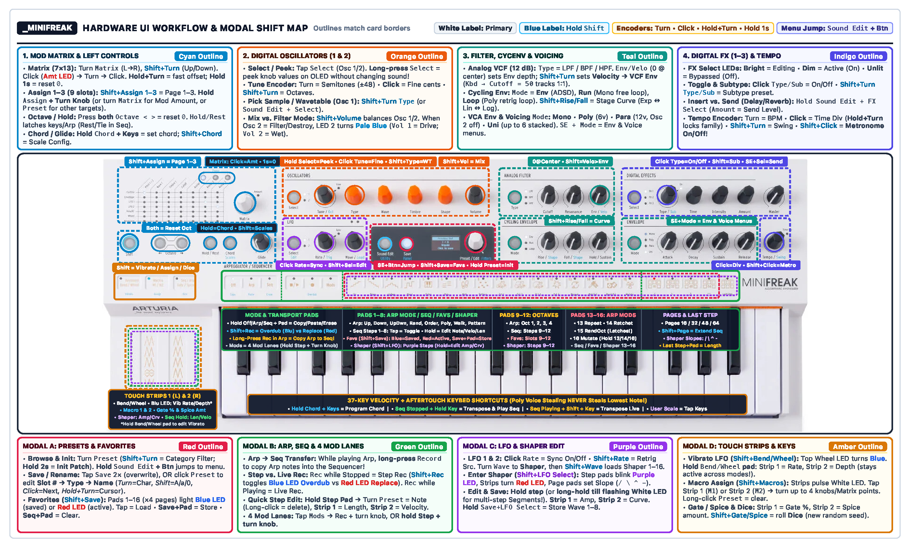

37-Key Hybrid Synthesizer Workflow & Sound Design Reference
A 3-part interactive and print-ready desk reference built for fast hands-on navigation, sound-building inspiration, and deep signal-flow exploration. Sized for 14" × 8.5" Legal Landscape sheets so printed copies fit flat inside the 22.75" × 9.1" MiniFreak case.
UI Workflow Infographic & Complete Menu Reference
Answers “If I want to do X, what do I press?” across the entire front panel without cluttering the view with sound option lists.
- • Sheet 1 (Front): High-resolution hardware panel photo with precision color-coded outlines matching the 8 workflow and modal shift cards (Arp/Seq, Favorites, Purple LFO Shaper, and Touch Strips).
- • Sheet 2 (Back): Instant
Sound Edit + Buttonshortcuts, Top 16 task lookup table, and completeSound Editvs.Utilitymenu trees. - • Single Source of Truth: Directly prints as a 2-page 14"×8.5" Legal Landscape PDF and generates the standalone 2800×1700 high-resolution PNG.
Sound-Building “Vibe & Flavor” Handout
Your first point of entry when building a patch from scratch: what each engine sounds like, when to reach for it, and where its sweet spots hide.
- • Sheet 1 (Oscillator Palette): All 14 Shared Engines, Osc 1 Exclusives (Wavetable, Sample, Audio In, 7 Granular Engines), and Osc 2 Filters/Processors with
Wave / Timbre / Shapemappings. - • Sheet 2 (Digital FX & Recipes): All 12 FX types (including v4.0 Vocoders), hidden
Shift+Typesubtypes, and 6 starter patch recipes. - • Interactive Vibe Filter: Highlight engines by Warm/Lush, Gritty/Folded, Plucked/Bell/FM, Vocal/Talk, or Granular Groove.
Technical Controls & Signal-Flow Roadmap
Traces the hybrid digital-into-analog architecture across 6 stages, explaining how levels, slopes, curves, and voice allocation shape the sound.
- • End-to-End Signal Diagram: Visualizes parallel Osc mix vs. Pale-Blue Osc 2 Drive/Wet, 12 dB Analog SEM VCF, 6v Poly vs. 12v Paraphonic pairs, and Serial vs. Send FX.
- • 6 Technical Deep Dives: Wavefolding physics, Filter Key Tracking (
+50),RHFvs.RFHCycling Env stages,VeloAT = Both, and Matrix sidechaining. - • “Try This to Hear It” Labs: 6 hands-on micro-experiments starting from
Init Preset.
High-Resolution Annotated Hardware Panel Diagram
Derived directly from Sheet 1 of Doc 1 (2800 × 1700 PNG at 14" × 8.5" Legal Landscape aspect ratio)

Every document page is formatted with @page { size: 14in 8.5in; } print rules so the navigation bar and screen toolbar automatically hide when printing.
MiniFreak and MiniFreak V are hardware and software instruments designed and manufactured by Arturia. All product names, trademarks, hardware photography, and firmware designs are the property of Arturia. This reference suite is an unofficial community companion created to support hands-on learning alongside Arturia’s official documentation.